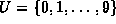
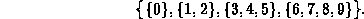
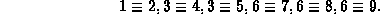
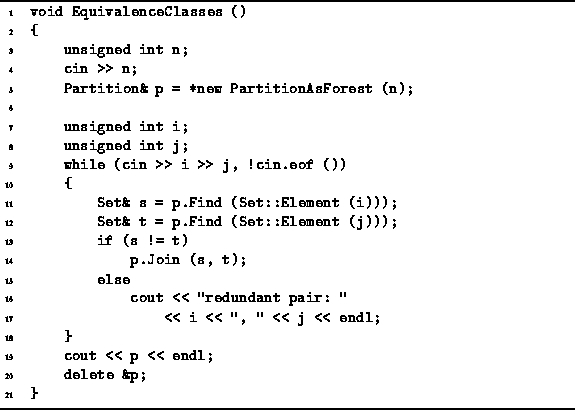
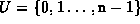

Data Structures and Algorithms
with Object-Oriented Design Patterns in C++
Data Structures and Algorithms
with Object-Oriented Design Patterns in C++One of the most important applications of partitions involves the processing of equivalence relations. Equivalence relations arise in many interesting contexts. For example, two nodes in an electric circuit are electrically equivalent if there is a conducting path (a wire) connecting the two nodes. In effect, the wires establish an electrical equivalence relation over the nodes of a circuit.
A similar relation arises among the user-defined data types in a C++ program. Consider the following C++ code fragment:
class A; typedef A B; typedef A C; typedef B D;The four data types A, B, C and D are equivalent in the sense that values of one type can be assigned directly to variables of another (without requiring a type conversion). In effect, the typedef declarations establish a type equivalence relation over the user-defined data types in a C++ program.
Definition (Equivalence Relation) An equivalence relation over a universal set U is a relationwith the following properties:
An important characteristic of an equivalence relation is that it
partitions the elements of the universal set U into
a set of equivalence classes .
I.e., U is partitioned into  ,
such that for every pair and
,
such that for every pair and  ,
if and only if
x and y are in the same element of the partition.
I.e.,
,
if and only if
x and y are in the same element of the partition.
I.e.,
For example, consider the universe .
and the equivalence relation  defined over U defines as follows:
defined over U defines as follows:
This relation results in the following partition of U:

The list of equivalences in Equation  contains many redundancies.
Since we know that the relation
contains many redundancies.
Since we know that the relation  is reflexive, symmetric and transitive,
it is possible to infer the complete relation from the following list
is reflexive, symmetric and transitive,
it is possible to infer the complete relation from the following list

The problem of finding the set of equivalence classes
from a list of equivalence pairs is easily solved using a partition.
Program shows how it can be done
using the PartitionAsForest class defined in Section .

Program: Application of Disjoint Sets--Finding Equivalence Classes
The algorithm first gets a positive integer n from the input
and creates a partition, p,
of the universe  (lines 3-5).
As explained in Section ,
the initial partition comprises n disjoint sets of size one.
I.e., each element of the universal set
is in a separate element of the partition.
Each iteration of the main loop processes one equivalence pair (lines 9-18).
An equivalence pair consists of two numbers, i and j,
such that  and
and  .
The find operation is used to determine the sets s and t
in partition p that contain elements i and j,
respectively (lines 11-12).
.
The find operation is used to determine the sets s and t
in partition p that contain elements i and j,
respectively (lines 11-12).
If s and t are not the same set, then the disjoint sets are united using the join operation (lines 13-14). Otherwise, i and j are already in the same set and the equivalence pair is redundant (lines 15-17). After all the pairs have been processed, the final partition is printed (line 19).
 Copyright © 1997 by Bruno R. Preiss, P.Eng. All rights reserved.
Copyright © 1997 by Bruno R. Preiss, P.Eng. All rights reserved.